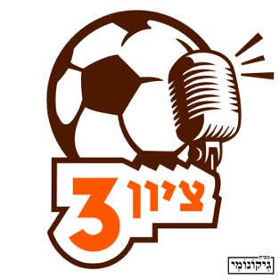

הפודקסטיה

ציון 3
״ציון 3״ הוא פודקאסט שבועי בנושא כדורגל מאת יונתן נמרודי וראם שרמן. רק התחלנו, תהיו נחמדים ותנו פידבקים. יונתן נמרודי הוא מתכנן, מעצב ובונה מכונות שיווק אוטומטיות לסטארטפים. שומע רק מוזיקה מהאייטיז. משחק בפלייסטיישן במהלך מחציות
של משחקי כדורגל. זוכר כל שער שמכבי תל אביב כבשה מאז שנת 1995, אוהד גאה של רומא, בעיקר בזכות פרנצ'סקו טוטי. טוען שיש דבר כזה פרסום רע. ראם שרמן הוא יצרן תוכן וקוד. עשה שבבים, כתב על משחקים, איבד כמה אצבעות בדרך, אבל נשאר רוסי
שמח. לאחרונה בעיקר בגלל שהפועל באר-שבע סוף כל סוף זכתה באליפות. חובב כדורגל, כדורגל ישראלי, כדורסל, MMA ופחות או יותר כל ענף ספורט אחר. יתכן שיש לו בעיית הימורים.